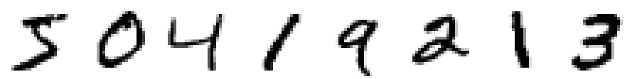
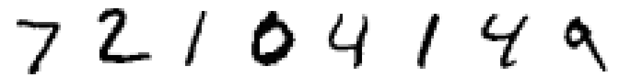
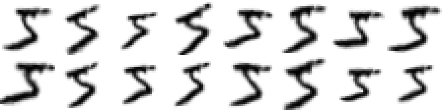
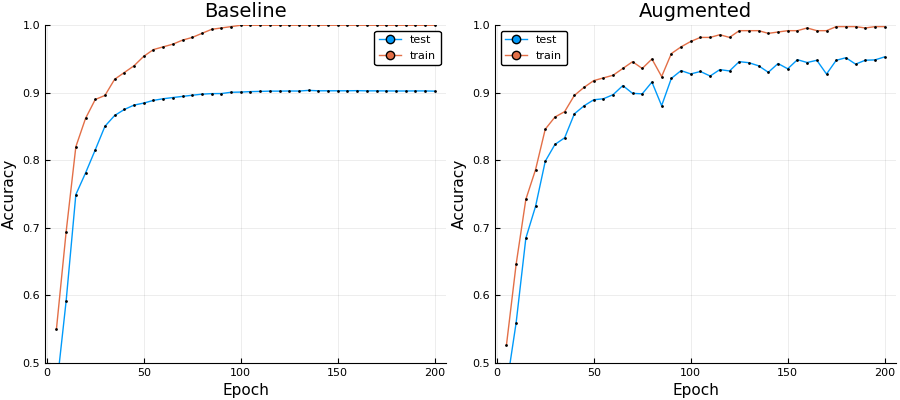

MNIST: Knet.jl CNN
In this tutorial we will adapt the MNIST example from Knet.jl to utilize a custom augmentation pipeline. In order to showcase the effect that image augmentation can have on a neural network's ability to generalize, we will limit the training set to just the first 500 images (of the available 60,000!). For more information on the dataset see [MNIST1998].
This tutorial is also available as a Juypter notebook. You can find a link to the Juypter version of this tutorial in the top right corner of this page.
Preparing the MNIST dataset
In order to access, prepare, and visualize the MNIST images we employ the help of three additional Julia packages. In the interest of time and space we will not go into great detail about their functionality. Feel free to click on their respective names to find out more information about the utility they can provide.
MLDatasets.jl has an MNIST submodule that offers a convenience interface to read the MNIST database.
Images.jl will provide us with the necessary tools to process and display the image data in Julia / Juypter.
MLDataUtils.jl implements a variety of functions to convert and partition Machine Learning datasets. This will help us prepare the MNIST data to be used with Knet.jl.
using Images, MLDatasets, MLDataUtils
srand(42);As you may have seen previously in the elastic distortions tutorial, the function MNIST.traintensor returns the MNIST training images corresponding to the given indices as a multi-dimensional array. These images are stored in the native horizontal-major memory layout as a single array. Because we specify that the eltype of that array should be Float32, all the individual values are scaled to be between 0.0 and 1.0. Also note, how the observations are laid out along the last array dimension
@show summary(MNIST.traintensor(Float32, 1:500));summary(MNIST.traintensor(Float32, 1:500)) = "28×28×500 Array{Float32,3}"The corresponding label of each image is stored as an integer value between 0 and 9. That means that if the label has the value 3, then the corresponding image is known to be a handwritten "3". To show a more concrete example, the following code reveals that the first training image denotes a "5" and the second training image a "0" (etc).
@show summary(MNIST.trainlabels(1:500))
println("First eight labels: ", join(MNIST.trainlabels(1:8),", "))summary(MNIST.trainlabels(1:500)) = "500-element Array{Int64,1}"
First eight labels: 5, 0, 4, 1, 9, 2, 1, 3For Knet we will require a slightly format for the images and also the labels. More specifically, we add an additional singleton dimension of length 1 to our image array. Think of this as our single color channel (because MNIST images are gray). Additionally we will convert our labels to proper 1-based indices. This is because some functions provided by Knet expect the labels to be in this format. We will do all this by creating a little utility function that we will name prepare_mnist.
"""
prepare_mnist(images, labels) -> (X, Y)
Change the dimension layout x1×x2×N of the given array
`images` to x1×x2×1×N and return the result as `X`.
The given integer vector `labels` is transformed into
an integer vector denoting 1-based class indices.
"""
function prepare_mnist(images, labels)
X = reshape(images, (28, 28, 1, :))
Y = convertlabel(LabelEnc.Indices{Int8}, labels, 0:9)
X, Y
endWith prepare_mnist defined, we can now use it in conjunction with the functions in the MLDatasets.MNIST sub-module to load and prepare our training set. Recall that for this tutorial only the first 500 images of the training set will be used.
train_x, train_y = prepare_mnist(MNIST.traintensor(Float32, 1:500), MNIST.trainlabels(1:500))
@show summary(train_x) summary(train_y);
[MNIST.convert2image(train_x[:,:,1,i]) for i in 1:8]summary(train_x) = "28×28×1×500 Array{Float32,4}"
summary(train_y) = "500-element Array{Int8,1}"
Similarly, we use MNIST.testtensor and MNIST.testlabels to load the full MNIST test set. We will utilize that data to measure how well the network is able to generalize with and without augmentation.
test_x, test_y = prepare_mnist(MNIST.testtensor(Float32), MNIST.testlabels())
@show summary(test_x) summary(test_y);
[MNIST.convert2image(test_x[:,:,1,i]) for i in 1:8]summary(test_x) = "28×28×1×10000 Array{Float32,4}"
summary(test_y) = "10000-element Array{Int8,1}"
Defining the Network
With the dataset prepared, we can now define and instantiate our neural network. To keep things simple, we will use the same convolutional network as defined in the MNIST example of the Knet.jl package.
using KnetThe first thing we will do is define the forward pass through the network. This will effectively outline the computation graph of the network architecture. Note how this does not define some details, such as the number of neurons per layer. We will define those later when initializing our vector of weight arrays w.
"""
forward(w, x) -> a
Compute the forward pass for the given minibatch `x` by using the
neural network parameters in `w`. The resulting (unnormalized)
activations of the last layer are returned as `a`.
"""
function forward(w, x)
# conv1 (2x2 maxpool)
a1 = pool(relu.(conv4(w[1], x) .+ w[2]))
# conv2 (2x2 maxpool)
a2 = pool(relu.(conv4(w[3], a1) .+ w[4]))
# dense1 (relu)
a3 = relu.(w[5] * mat(a2) .+ w[6])
# dense2 (identity)
a4 = w[7] * a3 .+ w[8]
return a4
endIn order to be able to train our network we need to choose a cost function. Because this is a classification problem we will use the negative log-likelihood (provided by Knet.nll). With the cost function defined we can the simply use the higher-order function grad to create a new function costgrad that computes us the corresponding gradients.
"""
cost(w, x, y) -> AbstractFloat
Compute the per-instance negative log-likelihood for the data
in the minibatch `(x, y)` given the network with the current
parameters in `w`.
"""
cost(w, x, y) = nll(forward(w, x), y)
costgrad = grad(cost)Aside from the cost function that we need for training, we would also like a more interpretable performance measurement. In this tutorial we will use "accuracy" for its simplicity and because we know that the class distribution for MNIST is close to uniform.
"""
acc(w, X, Y; [batchsize]) -> Float64
Compute the accuracy for the data in `(X,Y)` given the network
with the current parameters in `w`. The resulting value is
computed by iterating over the data in minibatches of size
`batchsize`.
"""
function acc(w, X, Y; batchsize = 100)
sum = 0; count = 0
for (x_cpu, y) in eachbatch((X, Y), maxsize = batchsize)
x = KnetArray{Float32}(x_cpu)
sum += Int(accuracy(forward(w,x), y, average = false))
count += length(y)
end
return sum / count
endBefore we can train or even just use our network, we need to define how we initialize w, which is our the vector of parameter arrays. The dimensions of these individual arrays specify the filter sizes and number of neurons. It can be helpful to compare the indices here with the indices used in our forward function to see which array corresponds to which computation node of our network.
function weights(atype = KnetArray{Float32})
w = Array{Any}(8)
# conv1
w[1] = xavier(5,5,1,20)
w[2] = zeros(1,1,20,1)
# conv2
w[3] = xavier(5,5,20,50)
w[4] = zeros(1,1,50,1)
# dense1
w[5] = xavier(500,800)
w[6] = zeros(500,1)
# dense2
w[7] = xavier(10,500)
w[8] = zeros(10,1)
return map(a->convert(atype,a), w)
endTraining without Augmentation
In order to get an intuition for how useful augmentation can be, we need a sensible baseline to compare to. To that end, we will first train the network we just defined using only the (unaltered) 500 training examples.
The package ValueHistories.jl will help us record the accuracy during the training process. We will use those logs later to visualize the differences between having augmentation or no augmentation.
using ValueHistoriesTo keep things simple, we will not overly optimize our training function. Thus, we will be content with using a closure. Because both, the baseline and the augmented version, will share this "inefficiency", we should still get a decent enough picture of their performance differences.
function train_baseline(; epochs = 500, batchsize = 100, lr = .03)
w = weights()
log = MVHistory()
for epoch in 1:epochs
for (batch_x_cpu, batch_y) in eachbatch((train_x ,train_y), batchsize)
batch_x = KnetArray{Float32}(batch_x_cpu)
g = costgrad(w, batch_x, batch_y)
Knet.update!(w, g, lr = lr)
end
if (epoch % 5) == 0
train = acc(w, train_x, train_y)
test = acc(w, test_x, test_y)
@trace log epoch train test
msg = "epoch " * lpad(epoch,4) * ": train accuracy " * rpad(round(train,3),5,"0") * ", test accuracy " * rpad(round(test,3),5,"0")
println(msg)
end
end
log
endAside from the accuracy, we will also keep an eye on the training time. In particular we would like to see if and how the addition of augmentation causes our training time to increase.
train_baseline(epochs=1) # warm-up
baseline_log = @time train_baseline(epochs=200);epoch 5: train accuracy 0.602, test accuracy 0.504
epoch 10: train accuracy 0.746, test accuracy 0.661
epoch 15: train accuracy 0.814, test accuracy 0.750
epoch 20: train accuracy 0.848, test accuracy 0.790
epoch 25: train accuracy 0.896, test accuracy 0.831
epoch 30: train accuracy 0.902, test accuracy 0.858
epoch 35: train accuracy 0.922, test accuracy 0.866
epoch 40: train accuracy 0.932, test accuracy 0.872
epoch 45: train accuracy 0.940, test accuracy 0.877
epoch 50: train accuracy 0.956, test accuracy 0.880
epoch 55: train accuracy 0.966, test accuracy 0.884
epoch 60: train accuracy 0.970, test accuracy 0.886
epoch 65: train accuracy 0.978, test accuracy 0.888
epoch 70: train accuracy 0.988, test accuracy 0.888
epoch 75: train accuracy 0.990, test accuracy 0.890
epoch 80: train accuracy 0.992, test accuracy 0.892
epoch 85: train accuracy 0.996, test accuracy 0.893
epoch 90: train accuracy 1.000, test accuracy 0.894
epoch 95: train accuracy 1.000, test accuracy 0.894
epoch 100: train accuracy 1.000, test accuracy 0.895
epoch 105: train accuracy 1.000, test accuracy 0.895
epoch 110: train accuracy 1.000, test accuracy 0.895
epoch 115: train accuracy 1.000, test accuracy 0.895
epoch 120: train accuracy 1.000, test accuracy 0.896
epoch 125: train accuracy 1.000, test accuracy 0.896
epoch 130: train accuracy 1.000, test accuracy 0.897
epoch 135: train accuracy 1.000, test accuracy 0.896
epoch 140: train accuracy 1.000, test accuracy 0.897
epoch 145: train accuracy 1.000, test accuracy 0.897
epoch 150: train accuracy 1.000, test accuracy 0.897
epoch 155: train accuracy 1.000, test accuracy 0.897
epoch 160: train accuracy 1.000, test accuracy 0.897
epoch 165: train accuracy 1.000, test accuracy 0.897
epoch 170: train accuracy 1.000, test accuracy 0.897
epoch 175: train accuracy 1.000, test accuracy 0.897
epoch 180: train accuracy 1.000, test accuracy 0.897
epoch 185: train accuracy 1.000, test accuracy 0.897
epoch 190: train accuracy 1.000, test accuracy 0.897
epoch 195: train accuracy 1.000, test accuracy 0.897
epoch 200: train accuracy 1.000, test accuracy 0.898
12.875449 seconds (3.16 M allocations: 284.518 MiB, 1.74% gc time)As we can see, the accuracy on the training set is around a 100%, while the accuracy on the test set peaks around 90%. For a mere 500 training examples, this isn't actually that bad of a result.
Integrating Augmentor
Now that we have a network architecture with a baseline to compare to, let us finally see what it takes to add Augmentor to our experiment. First, we need to include the package to our experiment.
using AugmentorThe next step, and maybe the most human-hour consuming part of adding image augmentation to a prediction problem, is to design and select a sensible augmentation pipeline. Take a look at the elastic distortions tutorial for an example of how to do just that.
For this example, we already choose a quite complicated but promising augmentation pipeline for you. This pipeline was designed to yield a large variation of effects as well as to showcase how even deep pipelines are quite efficient in terms of performance.
pl = Reshape(28,28) |>
PermuteDims(2,1) |>
ShearX(-5:5) * ShearY(-5:5) |>
Rotate(-15:15) |>
CropSize(28,28) |>
Zoom(0.9:0.1:1.2) |>
CacheImage() |>
ElasticDistortion(10) |>
PermuteDims(2,1) |>
Reshape(28,28,1)10-step Augmentor.ImmutablePipeline:
1.) Reshape array to 28×28
2.) Permute dimension order to (2, 1)
3.) Either: (50%) ShearX by ϕ ∈ -5:5 degree. (50%) ShearY by ψ ∈ -5:5 degree.
4.) Rotate by θ ∈ -15:15 degree
5.) Crop a 28×28 window around the center
6.) Zoom by I ∈ {0.9×0.9, 1.0×1.0, 1.1×1.1, 1.2×1.2}
7.) Cache into temporary buffer
8.) Distort using a smoothed and normalized 10×10 grid with pinned border
9.) Permute dimension order to (2, 1)
10.) Reshape array to 28×28×1Most of the used operations are quite self explanatory, but there are some details about this pipeline worth pointing out explicitly.
We use the operation
PermuteDimsto convert the horizontal-major MNIST image to a julia-native vertical-major image. The vertical-major image is then processed and converted back to a horizontal-major array. We mainly do this here to showcase the option, but it is also to keep consistent with how the data is usually used in the literature. Alternatively, one could just work with the MNIST data in a vertical-major format all the way through without any issue.
As counter-intuitive as it sounds, the operation
CacheImageright beforeElasticDistortionis actually used to improve performance. If we were to omit it, then the whole pipeline would be applied in one single pass. In this case, applying distortions on top of affine transformations lazily is in fact less efficient than using a temporary variable.
With the pipeline now defined, let us quickly peek at what kind of effects we can achieve with it. In particular, lets apply the pipeline multiple times to the first training image and look at what kind of results it produces.
[MNIST.convert2image(reshape(augment(train_x[:,:,:,1], pl), (28, 28))) for i in 1:8, j in 1:2]
As we can see, we can achieve a wide range of effects, from more subtle to more pronounced. The important part is that all examples are still clearly representative of the true label.
Next, we have to adapt the function train_baseline to make use of our augmentation pipeline. To integrate Augmentor efficiently, there are three necessary changes we have to make.
Preallocate a buffer with the same size and element type that each batch has.
batch_x_aug = zeros(Float32, 28, 28, 1, batchsize)
Add a call to
augmentbatch!in the inner loop of the batch iterator using our pipeline and buffer.augmentbatch!(batch_x_aug, batch_x_org, pl)
Replace
batch_x_orgwithbatch_x_augin the constructor ofKnetArray.batch_x = KnetArray{Float32}(batch_x_aug)
Applying these changes to our train_baseline function will give us something similar to the following function. Note how all the other parts of the function remain exactly the same as before.
function train_augmented(; epochs = 500, batchsize = 100, lr = .03)
w = weights()
log = MVHistory()
batch_x_aug = zeros(Float32, size(train_x,1), size(train_x,2), 1, batchsize)
for epoch in 1:epochs
for (batch_x_cpu, batch_y) in eachbatch((train_x ,train_y), batchsize)
augmentbatch!(CPUThreads(), batch_x_aug, batch_x_cpu, pl)
batch_x = KnetArray{Float32}(batch_x_aug)
g = costgrad(w, batch_x, batch_y)
Knet.update!(w, g, lr = lr)
end
if (epoch % 5) == 0
train = acc(w, train_x, train_y)
test = acc(w, test_x, test_y)
@trace log epoch train test
msg = "epoch " * lpad(epoch,4) * ": train accuracy " * rpad(round(train,3),5,"0") * ", test accuracy " * rpad(round(test,3),5,"0")
println(msg)
end
end
log
endYou may have noticed in the code above that we also pass a CPUThreads() as the first argument to augmentbatch!. This instructs Augmentor to process the images of the batch in parallel using multi-threading. For this to work properly you will need to set the environment variable JULIA_NUM_THREADS to the number of threads you wish to use. You can check how many threads are used with the function Threads.nthreads()
@show Threads.nthreads();Threads.nthreads() = 12Now that all pieces are in place, let us train our network once more. We will use the same parameters except that now instead of the original training images we will be using randomly augmented images. This will cause every epoch to be different.
train_augmented(epochs=1) # warm-up
augmented_log = @time train_augmented(epochs=200);epoch 5: train accuracy 0.564, test accuracy 0.494
epoch 10: train accuracy 0.622, test accuracy 0.541
epoch 15: train accuracy 0.734, test accuracy 0.658
epoch 20: train accuracy 0.812, test accuracy 0.765
epoch 25: train accuracy 0.866, test accuracy 0.798
epoch 30: train accuracy 0.846, test accuracy 0.797
epoch 35: train accuracy 0.872, test accuracy 0.826
epoch 40: train accuracy 0.890, test accuracy 0.852
epoch 45: train accuracy 0.904, test accuracy 0.854
epoch 50: train accuracy 0.922, test accuracy 0.869
epoch 55: train accuracy 0.932, test accuracy 0.894
epoch 60: train accuracy 0.938, test accuracy 0.894
epoch 65: train accuracy 0.944, test accuracy 0.912
epoch 70: train accuracy 0.946, test accuracy 0.910
epoch 75: train accuracy 0.954, test accuracy 0.918
epoch 80: train accuracy 0.960, test accuracy 0.919
epoch 85: train accuracy 0.964, test accuracy 0.930
epoch 90: train accuracy 0.940, test accuracy 0.893
epoch 95: train accuracy 0.976, test accuracy 0.935
epoch 100: train accuracy 0.978, test accuracy 0.937
epoch 105: train accuracy 0.970, test accuracy 0.919
epoch 110: train accuracy 0.984, test accuracy 0.939
epoch 115: train accuracy 0.986, test accuracy 0.942
epoch 120: train accuracy 0.988, test accuracy 0.937
epoch 125: train accuracy 0.992, test accuracy 0.937
epoch 130: train accuracy 0.994, test accuracy 0.938
epoch 135: train accuracy 0.992, test accuracy 0.940
epoch 140: train accuracy 0.994, test accuracy 0.942
epoch 145: train accuracy 0.988, test accuracy 0.935
epoch 150: train accuracy 0.998, test accuracy 0.948
epoch 155: train accuracy 0.994, test accuracy 0.949
epoch 160: train accuracy 0.998, test accuracy 0.948
epoch 165: train accuracy 0.998, test accuracy 0.950
epoch 170: train accuracy 0.998, test accuracy 0.951
epoch 175: train accuracy 0.998, test accuracy 0.957
epoch 180: train accuracy 0.998, test accuracy 0.954
epoch 185: train accuracy 0.998, test accuracy 0.952
epoch 190: train accuracy 0.998, test accuracy 0.956
epoch 195: train accuracy 0.998, test accuracy 0.949
epoch 200: train accuracy 0.998, test accuracy 0.954
31.108804 seconds (37.87 M allocations: 24.084 GiB, 15.05% gc time)As we can see, our network reaches far better results on our testset than our baseline network did. However, we can also see that the training took quite a bit longer than before. This difference generally decreases as the complexity of the utilized neural network increases. Yet another way to improve performance (aside from simplifying the augmentation pipeline) would be to increase the number of available threads.
Visualizing the Results
Before we end this tutorial, let us make use the Plots.jl package to visualize and discuss the recorded training curves. We will plot the accuracy curves of both networks side by side in order to get a good feeling about their differences.
using Plots
pyplot()plt = plot(
plot(baseline_log, title="Baseline", ylim=(.5,1)),
plot(augmented_log, title="Augmented", ylim=(.5,1)),
size = (900, 400),
xlab = "Epoch",
ylab = "Accuracy",
markersize = 1
)
Note how the accuracy on the (unaltered) training set increases faster for the baseline network than for the augmented one. This is to be expected, since our augmented network doesn't actually use the unaltered images for training, and thus has not actually seen them. Given this information, it is worth pointing out explicitly how the accuracy on training set is still greater than on the test set for the augmented network as well. This is also not a surprise, given that the augmented images are likely more similar to their original ones than to the test images.
For the baseline network, the accuracy on the test set plateaus quite quickly (around 90%). For the augmented network on the other hand, it the accuracy keeps increasing for quite a while longer.
References
LeCun, Yan, Corinna Cortes, Christopher J.C. Burges. "The MNIST database of handwritten digits" Website. 1998.